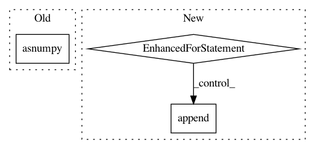

5ea0c27f524a3e684d9a2e6f012e30e6da2de8aa,scripts/bert/finetune_classifier.py,,test,#Any#Any#,334
Before Change
type_ids.as_in_context(ctx),
valid_length.astype("float32").as_in_context(ctx))
values, indices = mx.nd.topk(out, k=1, ret_typ="both")
value_list.extend(values.asnumpy().reshape(-1).tolist())
index_list.extend(indices.asnumpy().reshape(-1).tolist())
mx.nd.waitall()
After Change
valid_length.astype("float32").as_in_context(ctx))
if not task.class_labels:
// regression task
for result in out.asnumpy().reshape(-1).tolist():
results.append("{:.3f}".format(result))
else:
// classification task
indices = mx.nd.topk(out, k=1, ret_typ="indices", dtype="int32").asnumpy()
for index in indices:
In pattern: SUPERPATTERN
Frequency: 3
Non-data size: 3
Instances
Project Name: dmlc/gluon-nlp
Commit Name: 5ea0c27f524a3e684d9a2e6f012e30e6da2de8aa
Time: 2019-06-18
Author: linhaibin.eric@gmail.com
File Name: scripts/bert/finetune_classifier.py
Class Name:
Method Name: test
Project Name: dmlc/gluon-cv
Commit Name: ee602b6f68f0bdd19f449a86955697f8f0a2d54c
Time: 2019-09-21
Author: yizhu59@gmail.com
File Name: gluoncv/data/transforms/video.py
Class Name: VideoMultiScaleCrop
Method Name: forward
Project Name: geek-ai/MAgent
Commit Name: d15a15df582f43d9bc65a434db0d64c9e276b724
Time: 2017-11-23
Author: zhenglianmin96@163.com
File Name: python/magent/builtin/mx_model/dqn.py
Class Name: DeepQNetwork
Method Name: infer_action
Project Name: dmlc/gluon-nlp
Commit Name: 5ea0c27f524a3e684d9a2e6f012e30e6da2de8aa
Time: 2019-06-18
Author: linhaibin.eric@gmail.com
File Name: scripts/bert/finetune_classifier.py
Class Name:
Method Name: test